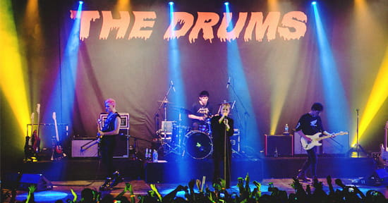
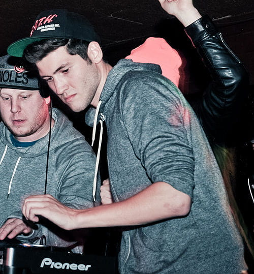
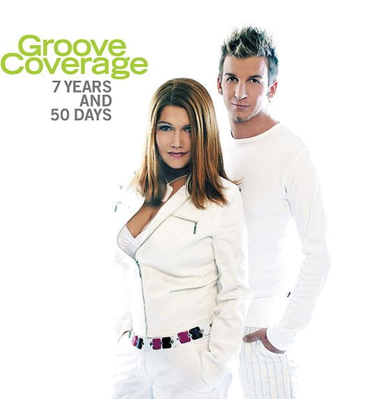
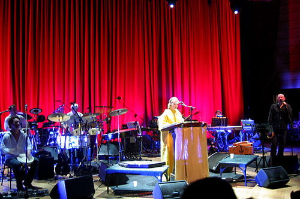
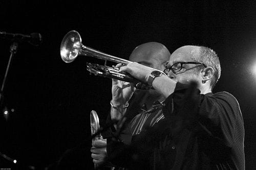
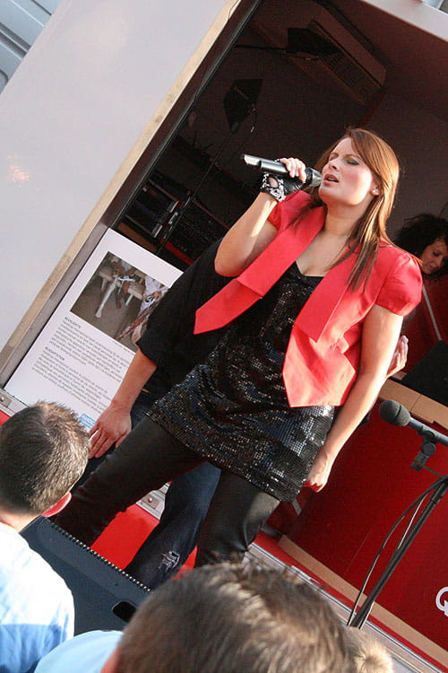

Bandas del festival
The Drums
Surf Rock
The Drums comenzó a actuar por toda la ciudad por el resto del verano, y la fiesta siguió. Con su "explosivo show en vivo" y un sonido e imagen que era a la vez familiar y relucientemente nueva, fueron pronto apodados como "la oficial nueva banda mas cool de New York" por NME y comenzaron a ser tocados en radios nacionales del Reino Unido al mismo tiempo que en radios universitarias de Estados Unidos.
Baauer
Trapwave
Productor estadounidense de música trap y bass. Produjo una pista con el nombre de Captain Harry, que fue usado por Kissy Sell Out en BBC Radio. Sus influencias incluyen el hip-hop y el dance.
Groove Coverage
Eurotrance
Groove Coverage es una banda Euro-trance Alemana. El grupo de Groove Coverage esta compuesto por Axel Konrad, DJ Novus, Mell (Vocalista principal), y Verena (ex artista de escenario, cantante auxiliar). La banda ha tenido hits(exitos) alrededor del mundo, especialmente en Alemania, y ha sonado en radios de Norte América, especialmente con la canción Poison.
Dead Can Dance
Neoclassical Dark Wave
Dead Can Dance se formó en Melbourne en el año 1981 estableciéndose inicialmente en Australia. Al no tener grandes perspectivas de éxito en ese país, se trasladaron a Londres, donde tras un año firmaron para el legendario sello de rock alternativo 4AD, convirtiéndose en una de sus bandas más importantes.
Dave Douglas
Avant Garden Jazz
Trompetista de jazz y compositor estadounidense cuya música se caracteriza por beber de diversas fuentes musicales ajenas al jazz, tales como la música clásica contemporánea, el rock y el folclore de distintas partes del mundo
AnnaGrace
Electronic dance
Grupo de música dance y electrónica, originarios de Bélgica. Han tenido bastante éxito a nivel mundial. Entre sus sencillos más conocidos destacan "Castles in the Sky", "Will I?" e "Inspiration".